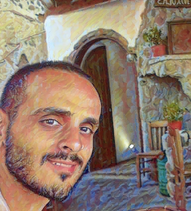

Erez Dafni
BI Developer
About Me
Focused and diligent engineer with more than 11 years of experience.
Experienced in BI development, SQL programming and large database analysis.
Passionate about technology, data, and complex problem-solving.
Highly organized and motivated, a fast learner with solid technical understanding and good communication skills.
Technical skills: SQL Server, Oracle Database, BigQuery, Spotfire, Tableau, Data Studio, Power BI, Python, HTML, UNIX